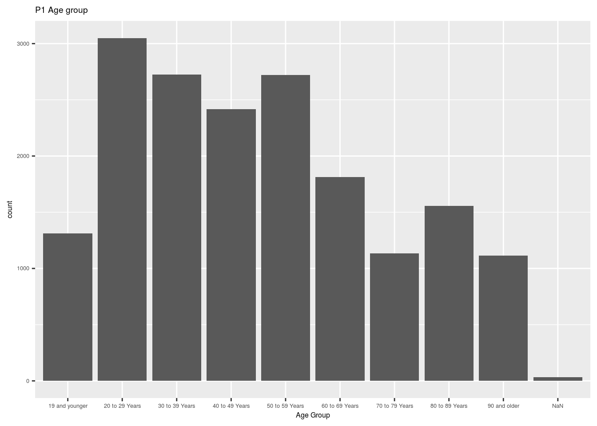
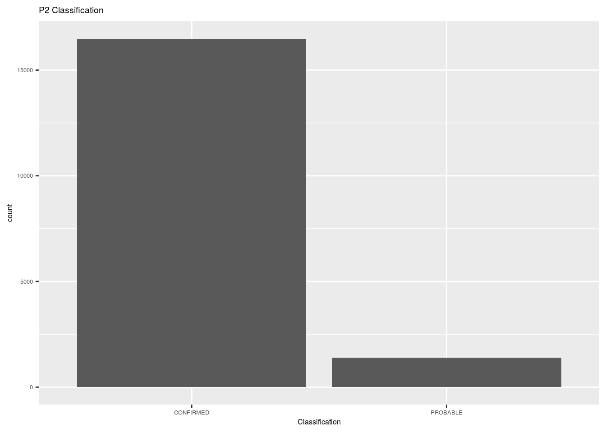
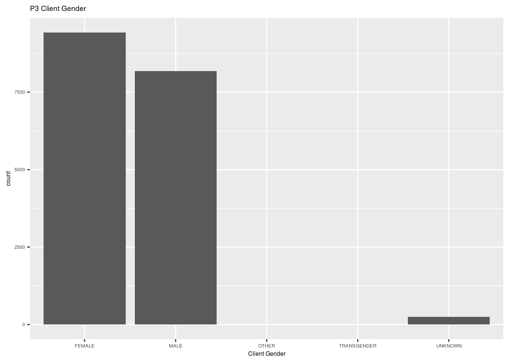
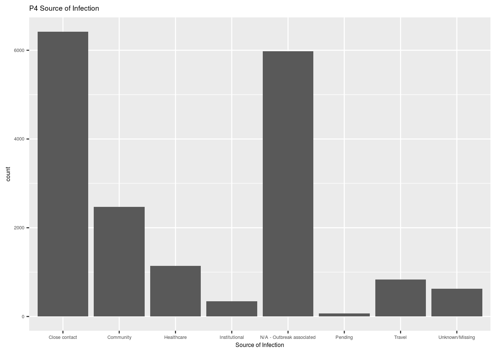
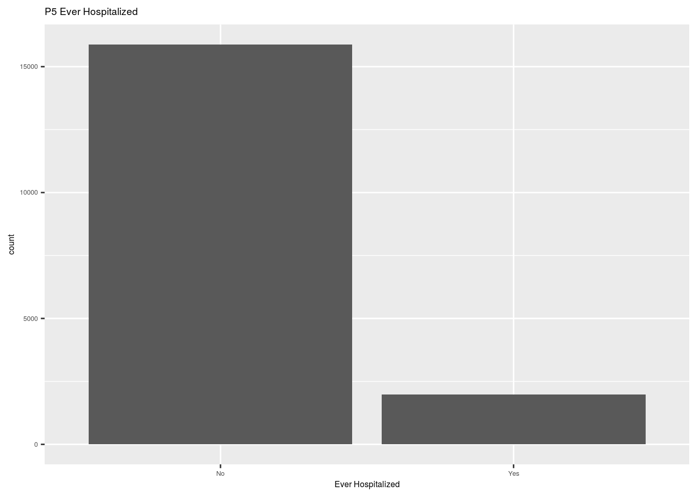
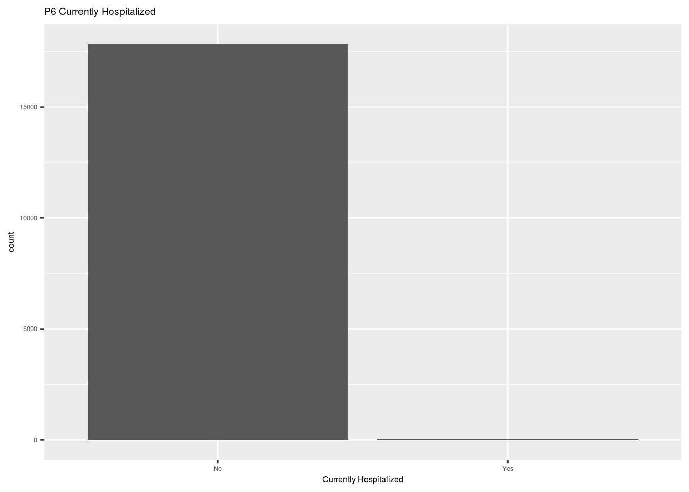
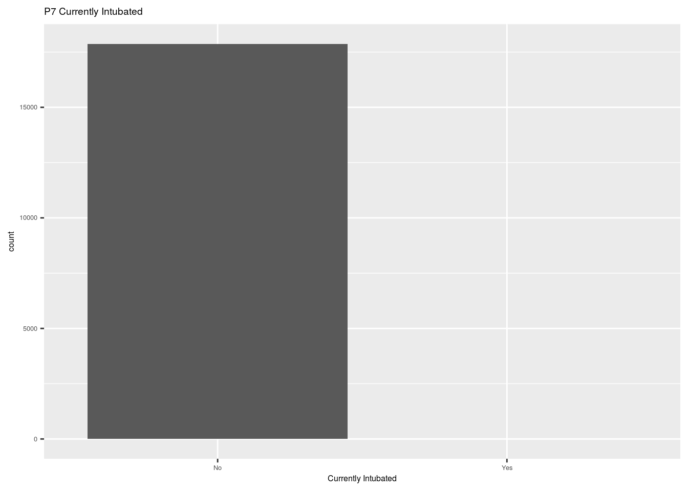
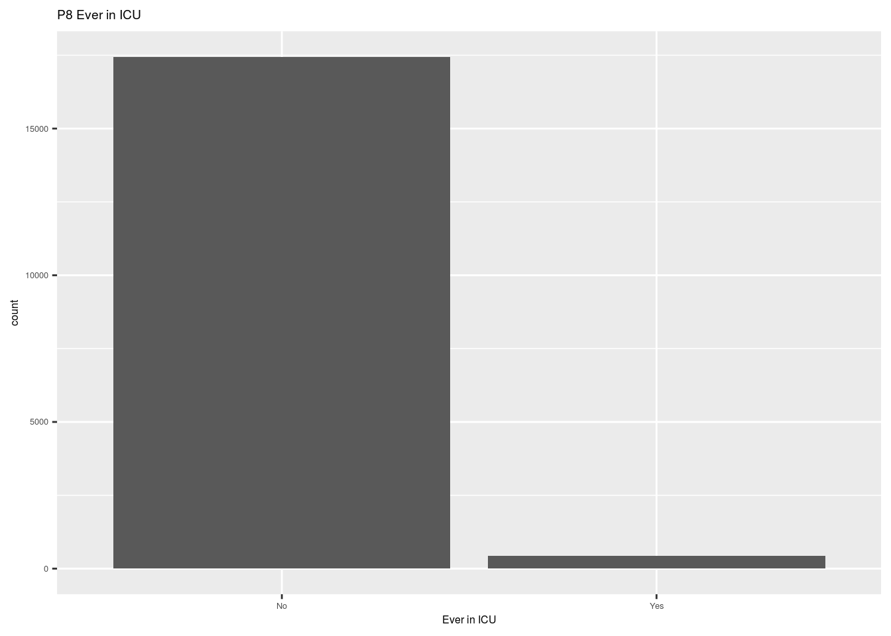
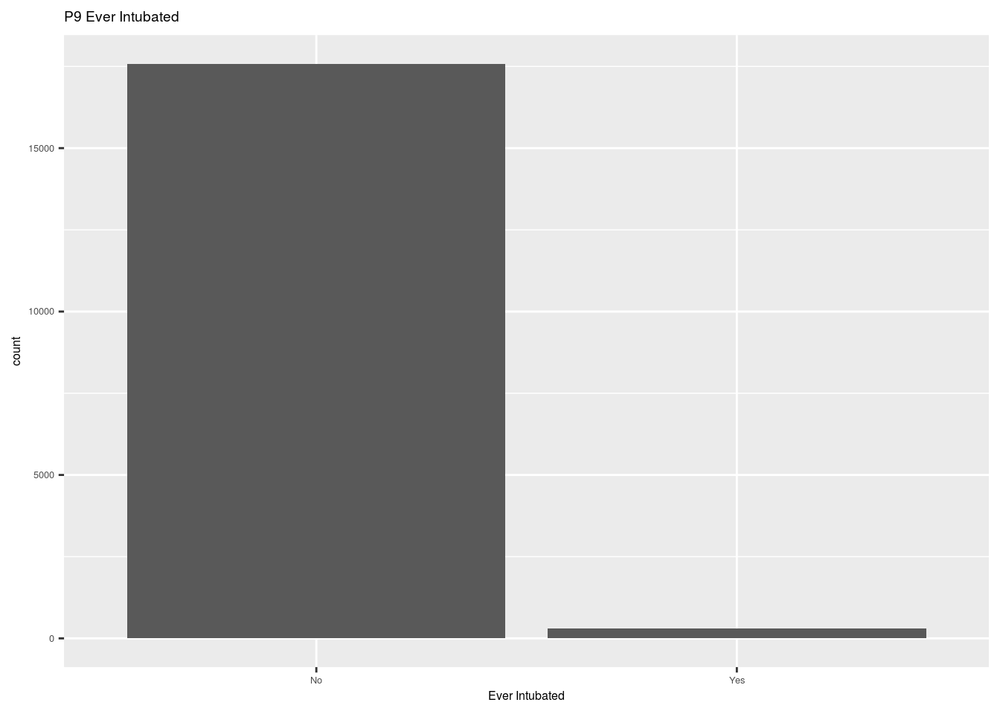

Abstraction
Covid-19 is a series disease around the world which would cause a significant bearing on outcome. There are some factors that would affect the covid-19: Age, Classification, Client Gender, Source of Infection, which could make Canadian prevent and control covid-19 well. Logistic regression model could be used to show the relation between factors and outcome.
Introduction
The covid-19 has been lasted for a long time around the world.Toronto government has taken action to prevent covid-19. There should be worse condition and better condition to the patients. The goal of this research is to find which patients have the worse condition and which factors would affect the covid-19 and cause people have high probability of incidence, and use the logistic regression model which belongs to generalized linear model to find the relation between the factors and outcome. The reason why the research is important is that the covid-19 is really dangerous to everyone, which will threat people’s lives, so people should avoid them and try to prevent and control covid-19.
Data introduction
_id and Assigned_ID are numeric variables, which are just the identical variable, so we will drop them.Outbreak Associated is a categorical variable, which conneted the outbreak of covid-19 and toronto health care service, we will drop it. Age group is a categorical variable and it shows the age of the patients. Nabourhood Name is categocial variable which shows patients’ different society and we will drop it. FSA, Episode date and Reported Date cannot show patients’ out come clearly, so drop them. Source of Infection is an important categorical variable, which illustrates potential acquisition sources. Client Gender is categorical variable which shows different gender has different number of patients. Currently hospitalized and ever hospitalized, currently in ICU and ever in ICU, Currently intubated and ever intubated could be divided into three different group are categorical variables, the two variable in the group can show different distrbution just like the figure in the following Health (2020).
##
## Attaching package: 'dplyr'
## The following objects are masked from 'package:stats':
##
## filter, lag
## The following objects are masked from 'package:base':
##
## intersect, setdiff, setequal, union
## ── Attaching packages ───────────────────────────────────────────── tidyverse 1.3.0 ──
## ✓ ggplot2 3.3.2 ✓ purrr 0.3.4
## ✓ tibble 3.0.3 ✓ stringr 1.4.0
## ✓ tidyr 1.1.2 ✓ forcats 0.5.0
## ✓ readr 1.3.1
## ── Conflicts ──────────────────────────────────────────────── tidyverse_conflicts() ──
## x dplyr::filter() masks stats::filter()
## x dplyr::lag() masks stats::lag()
## # A tibble: 1 x 10
## title id topics civic_issues excerpt dataset_category num_resources formats
## <chr> <chr> <chr> <chr> <chr> <chr> <int> <chr>
## 1 COVI… 64b5… <NA> <NA> <NA> <NA> 1 <NA>
## # … with 2 more variables: refresh_rate <chr>, last_refreshed <date>
## Rows: 17,872
## Columns: 18
## $ `_id` <int> 143647, 143648, 143649, 143650, 143651, 1436…
## $ Assigned_ID <int> 1, 2, 3, 4, 5, 6, 7, 8, 9, 10, 11, 12, 13, 1…
## $ `Outbreak Associated` <chr> "Sporadic", "Sporadic", "Sporadic", "Sporadi…
## $ `Age Group` <chr> "50 to 59 Years", "50 to 59 Years", "20 to 2…
## $ `Neighbourhood Name` <chr> "Willowdale East", "Willowdale East", "Parkw…
## $ FSA <chr> "M2N", "M2N", "M3A", "M4W", "M4W", "M2R", "M…
## $ `Source of Infection` <chr> "Travel", "Travel", "Travel", "Travel", "Tra…
## $ Classification <chr> "CONFIRMED", "CONFIRMED", "CONFIRMED", "CONF…
## $ `Episode Date` <chr> "2020-01-22", "2020-01-21", "2020-02-05", "2…
## $ `Reported Date` <chr> "2020-01-23", "2020-01-23", "2020-02-21", "2…
## $ `Client Gender` <chr> "FEMALE", "MALE", "FEMALE", "FEMALE", "MALE"…
## $ Outcome <chr> "RESOLVED", "RESOLVED", "RESOLVED", "RESOLVE…
## $ `Currently Hospitalized` <chr> "No", "No", "No", "No", "No", "No", "No", "N…
## $ `Currently in ICU` <chr> "No", "No", "No", "No", "No", "No", "No", "N…
## $ `Currently Intubated` <chr> "No", "No", "No", "No", "No", "No", "No", "N…
## $ `Ever Hospitalized` <chr> "No", "Yes", "No", "No", "No", "No", "No", "…
## $ `Ever in ICU` <chr> "No", "No", "No", "No", "No", "No", "No", "N…
## $ `Ever Intubated` <chr> "No", "No", "No", "No", "No", "No", "No", "N… Since most of the variables are categorical variables, bar-plot can be used to show their frequently happen or rarely happen.
Weaknesses
Since we use generalized linear model, we should assume all the variables are independent, which would affect our final model. Also, in the dataset, most of the variables are categorical, however, we may cahge some of them to numeric variable such as Age Group, which would help our model be better.
Appendix
Code and data supporting this analysis is available at:https://github.com/Johnston0618/WYW-STA304-Sample-inclass
Reference
Health, Toronto Public. 2020. “About Covid-19 Cases in Toronto.” https://open.toronto.ca/dataset/covid-19-cases-in-toronto/.